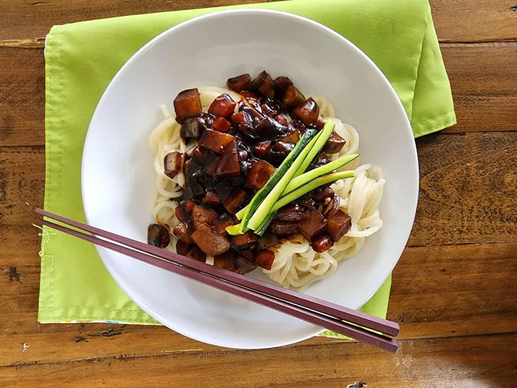

Jajangmyeon (Korean Black bean Noodles)

Description
Jajangmyeon (jjajangmyeon) is a quick and easy Korean black bean noodle dish that is delicious.
Preparation Time
- Prep Time: 10mins
- Cook Time: 20mins
- Total Time: 30mins
Ingredients
- ½ tablespoon canola oil
- 1 clove garlic, minced, or more to taste
- ½ cup cubed carrots
- ½ cup peeled and cubed potatoes
- salt and ground black pepper to taste
- ½ cup peeled and cubed zucchini
- ½ cup chopped onion
- 1 tablespoon cornstarch
- 1 tablespoon water
- 1 cup water
- 4 tablespoons black bean paste (chunjang)
- 1/2 tablespoon canola oil
- 1 tablespoon white sugar, or to taste
- ½ (7 ounce) package jaa jang myun noodles
Directions
- Heat oil in a wok over medium heat. Add garlic, carrot, and potato. Stir and add salt and pepper. cook until softened, 5 to 7 minutes, add zucchini and onion; stir.
- Combine cornstarch and water together in a bowl until fully mixed.
- Add water, blak bean paste, and sugar to the wok and stir. Add starch mixture to wok slowly while stirring; cook until sauce thickens, 3 to 5 minutes
- Bring a large pot of lightly salted water to a boil. Cook noodles in boiling water, stirring occasionally, until noodles are tender yet firm to the bite, about 3 minutes. Drain.
- Serve noodles in a large pasta bowl and add black bean mixture on top. Mix well.
Nutrition Facts (per serving)
| Calories |
315 |
| Fat |
6g |
| Carbs |
56g |
| Protein |
10g |